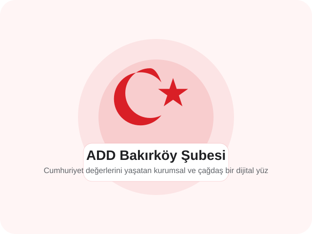

Eğitim ve Aydınlanma
Konferanslar, söyleşiler, okuma grupları ve gençlere yönelik programlarla Atatürkçü düşüncenin bilimsel temelini güçlendiririz.
Atatürk ilke ve devrimleri doğrultusunda; laik, demokratik ve sosyal hukuk devleti anlayışını, çağdaş eğitimi, kültürel gelişimi ve toplumsal dayanışmayı güçlendiren çalışmalar yürütüyoruz. Şubemiz; üyeleri, gönüllüleri ve mahalle ölçeğinde kurduğu güçlü bağ ile Bakırköy'de etkin bir kamusal değer üretir.

Şubemiz; Cumhuriyet değerlerinin yalnızca savunulmasını değil, günlük yaşam içinde görünür ve sürdürülebilir hale gelmesini amaçlar.
Konferanslar, söyleşiler, okuma grupları ve gençlere yönelik programlarla Atatürkçü düşüncenin bilimsel temelini güçlendiririz.
Yerel ölçekte dayanışma, gönüllülük ve ortak üretim kültürüyle Bakırköy halkının katılımını teşvik ederiz.
Cumhuriyet tarihinin, bağımsızlık mücadelesinin ve çağdaş yaşam ideallerinin kuşaklar arasında aktarımını destekleriz.
ADD Genel Merkez şubeler kaydında Bakırköy Şube Başkanı olarak yer alan Erdal Çekem öncülüğünde; şubemiz, yerel ölçekte düzenli toplantılar, söyleşi programları ve toplumsal farkındalık faaliyetleri yürütmektedir.
Çünkü çağdaş Cumhuriyet birikimini yerelden besleyen bir örgütlü yapıya ihtiyaç vardır. Şubemiz; hukukun üstünlüğü, laiklik, bilimsel eğitim, kadınların eşit yurttaşlığı, gençlerin güçlenmesi ve ulusal egemenlik ilkelerini somut faaliyetlerle yaşatır.
Şube tüzüğüne ve dernek ilkelerine bağlı, gönüllü katkı sunmak isteyen yurttaşlar için başvuru süreci açık biçimde yürütülür.
Üyelik Sürecini GörCumhuriyet tarihine, laik eğitime ve toplumsal dayanışmaya odaklanan etkinlik çizgimiz düzenli bir takvimle ilerler.
Takvimi İnceleTelefon, e-posta ve iletişim formu üzerinden şubemize kolayca ulaşabilir; öneri, görüş ve başvurularınızı iletebilirsiniz.
Bize Ulaşın